물류관리사-1교시 (2019-07-20 기출문제)
1과목: 물류관리론
1. 물류활동의 기본 기능에 관한 설명으로 옳지 않은 것은?
- 포장은 생산의 종착점으로서 표준화, 모듈화의 대상이다.
- 보관은 생산과 소비, 공급과 수요의 시점 및 수량적 차이를 조정한다.
- 유통가공은 고객의 요구에 대응하기 위해 제조업체에서 부품을 가공하는 활동이다.
- 하역은 운송, 보관 및 포장의 물자 취급과 관련된 보조적 활동으로서 기계화, 자동화의 대상이다.
- 운송은 생산과 소비의 장소적 차이에 의한 거리를 조정하는 활동이다.
(정답률: 59%)

2. 회수물류의 대상 품목에 해당하지 않는 것은?
- 음료용 알루미늄 캔
- 화물용 T-11 파렛트
- 주류용 빈병
- 운송용 컨테이너
- 일회용 소모성 자재
(정답률: 73%)
3. 최근 국내외 물류 산업의 동향에 관한 설명으로 옳지 않은 것은?
- 당일배송 서비스 확대 등 물류의 스피드 경쟁이 가속화되고 있다.
- 스마트팩토리의 고객맞춤형 생산은 물류의 대량화와 소빈도화를 촉진하고 있다.
- 고객맞춤형 기능 제공 등 고부가가치 물류서비스가 확산되고 있다.
- 에너지 절감, 친환경 물류, 안전ㆍ보안을 강화한 물류의 필요성이 증가하고 있다.
- 종합물류기업 인증제 도입 등 물류산업 육성을 위한 정책적 지원이 강화되고 있다.
(정답률: 74%)
4. 상적유통(Commercial Distribution)과 물적유통(Physical Distribution)에 관한 설명으로 옳은 것은?
- 화물정보의 전달 및 활용은 물적유통에 해당한다.
- 상품의 거래활동은 물적유통에 해당한다.
- 금융, 보험 등의 보조활동은 물적유통에 해당한다.
- 판매를 위한 상품의 포장은 상적유통에 해당한다.
- 효율 향상을 위해 상적유통과 물적유통을 통합한다.
(정답률: 38%)
5. 물류서비스 품질을 결정하는 요인을 서비스 시행 전ㆍ중ㆍ후로 나눌 때, 서비스 시행 중의 요인에 해당하는 것을 모두 고른 것은?
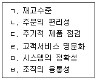
- ㄱ, ㅂ
- ㄱ, ㄴ, ㄷ
- ㄱ, ㄴ, ㅁ
- ㄴ, ㄷ, ㄹ
- ㄷ, ㄹ, ㅁ, ㅂ
(정답률: 50%)
6. 기업의 경쟁력을 높이기 위해서 신규 물류서비스를 도입하고자 할 때의 추진 순서로 옳은 것은?
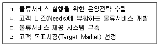
- ㄱ - ㄴ - ㄹ - ㄷ
- ㄱ - ㄹ - ㄴ - ㄷ
- ㄹ - ㄱ - ㄷ - ㄴ
- ㄹ - ㄴ - ㄱ - ㄷ
- ㄹ - ㄴ - ㄷ - ㄱ
(정답률: 46%)
7. 물류 측면의 고객서비스에 관한 설명으로 옳지 않은 것은?
- 물류서비스는 물품을 이동하는 마지막 단계로서 부가상품(Augmented Product)의 역할을 한다.
- 물류서비스 품질은 고객의 기대수준과 인지수준의 차이로 정의된다.
- 일반적으로 한 기업이 경쟁업체의 물류서비스를 모방하는 것은 불가능하다.
- 물류서비스와 물류비용 사이에는 상충(Trade-off) 관계가 존재한다.
- 물류서비스 품질은 고객과 서비스 제공자간의 상호작용에 의해서 결정된다.
(정답률: 65%)
8. 물류서비스의 신뢰성(Reliability)을 높이기 위한 방안에 해당하지 않는 것은?
- 신속 정확한 수주정보 처리
- 생산 및 운송 로트(Lot) 대량화
- 조달 리드타임(Lead time) 단축
- 제품 가용성(Availability) 정보 제공
- 재고관리의 정확도 향상
(정답률: 71%)
9. 물류관리전략에 관한 설명으로 옳지 않은 것은?
- 기업은 효율적인 물류관리활동을 통하여 원가를 절감할 수 있고 이를 바탕으로 시장점유율 제고 및 수익률 증대를 추구할 수 있다.
- 고객서비스를 평가하는 중요한 척도로는 주문 후 인도시까지의 소요시간, 고객주문에 대한 제품의 가용성, 주문 처리의 정확성 등이 있다.
- 물류관리전략을 설정할 때 우선적으로 고려해야 할 사항은 고객의 니즈(Needs)를 파악하는 것이다.
- 부품공급에서 소비자에 이르는 공급사슬에서 공급사슬 전체의 이익극대화 보다는 경로구성원 각자의 이익극대화를 추구해야 한다.
- 효과적인 물류관리전략은 유연성을 보유하면서 고객의 다양한 요구를 저렴한 비용으로 충족시킬 수 있도록 해야 한다.
(정답률: 67%)
10. 물류관리의 의사결정에 관한 설명으로 옳은 것은?
- 물류의사결정은 전략ㆍ전술ㆍ운영의 3단계 계층으로 구성된다.
- 수요예측, 주문처리 등은 전략적 의사결정에 해당한다.
- 운영절차, 일정계획 등은 전술적 의사결정에 해당한다.
- 마케팅 전략, 고객서비스 요구사항 등은 운영적 의사결정에 해당한다.
- 전략, 전술, 운영의 세 가지 의사결정은 상호간에 독립적으로 이루어져야 한다.
(정답률: 62%)
11. 물류조직의 형태에 관한 설명으로 옳지 않은 것은?
- 물류조직은 발전형태에 따라 직능형 조직, 라인과 스탭형 조직, 사업부형 조직, 그리드(Grid)형 조직 등으로 구분할 수 있다.
- 직능형 조직은 기업규모가 커지고 최고경영자가 기업의 모든 업무를 관리하기어려울 때 적합하다.
- 라인과 스탭형 조직은 작업부문과 지원부문을 분리한 조직이다.
- 사업부형 조직은 제품별 사업부와 지역별 사업부, 그리고 이 두 가지를 절충한 형태 등이 있다.
- 그리드(Grid)형 조직은 다국적 기업에서 많이 볼 수 있으며 모회사의 스탭이 자회사의 물류부문을 관리하는 형태이다.
(정답률: 59%)
12. 3자물류와 4자물류에 관한 설명으로 옳지 않은 것은?
- 3자물류는 장기간의 전략적 제휴형태 또는 합작기업으로 설립한 별도의 조직을 통해 종합적 서비스를 제공한다.
- 세계적인 3자물류업체 및 컨설팅회사들은 다른 물류기업들과의 인수합병을 통해 글로벌 차원으로 확대하면서 4자물류서비스를 제공하고 있다.
- 기업들은 3자물류를 통해 핵심부분에 집중하고 물류를 전문업체에게 아웃소싱하여 규모의 경제, 전문화 및 분업화 등의 효과를 거둘 수 있다.
- 4자물류는 3자물류에서 확장된 개념으로 자체의 기술 및 컨설팅 능력을 갖추고 공급체인 전반을 통합ㆍ관리한다.
- 4자물류는 전자상거래의 확대 및 SCM 체제의 보편화로 그 필요성이 강조되고 있다.
(정답률: 47%)
13. 물류 아웃소싱의 장ㆍ단점을 설명한 것으로 옳지 않은 것은?
- 제조업체는 물류거점에 대한 자본투입을 최소화하고 전문 물류업체의 인프라를 전략적으로 활용할 수 있다.
- 제조업체는 고객 불만에 대한 신속한 대처가 어렵다.
- 제조업체는 물류전문지식의 사내 축적이 비교적 용이하다.
- 제조업체는 기존 사내 물류인력의 실업과 정보의 유출이 발생할 수 있다.
- 물류업체는 규모의 경제를 통한 효율의 증대를 꾀할 수 있다.
(정답률: 61%)
14. 다음 ( )에 들어갈 용어를 바르게 나열한 것은?
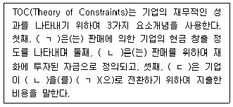
- ㄱ: 재고, ㄴ: 스루풋, ㄷ: 운영비용
- ㄱ: 스루풋, ㄴ: 재고, ㄷ: 운영비용
- ㄱ: 영업이익, ㄴ: 재고, ㄷ: 조달비용
- ㄱ: 영업이익, ㄴ: 제조원가, ㄷ: 운영비용
- ㄱ: 스루풋, ㄴ: 제조원가, ㄷ: 조달비용
(정답률: 34%)
15. 물류시스템 합리화 방안에 해당하지 않는 것은?
- 포장규격화를 고려한 제품설계
- 재고관리방법의 개선
- 하역의 기계화 및 자동화
- 인터넷을 통한 물류정보의 수집 및 활용
- 비용과 무관한 물류서비스 수준 최대화 추구
(정답률: 68%)
16. 녹색물류 실행과 관련된 내용으로 옳은 것을 모두 고른 것은?
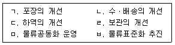
- ㅁ
- ㅁ, ㅂ
- ㄱ, ㄴ, ㄷ, ㄹ
- ㄱ, ㄴ, ㄷ, ㄹ, ㅁ
- ㄱ, ㄴ, ㄷ, ㄹ, ㅁ, ㅂ
(정답률: 60%)
17. 2018년도 매출액이 100억원인 A기업의 영업이익률은 5 %이고 물류비는 10억원이었다. 2019년도의 경영혁신 추진방안 중에서 재무적 기대효과가 가장 큰 것은? (단, 2019년 영업이익률은 2018년과 동일하다고 가정)
- 전년대비 매출액 20 % 증가와 물류비용 20 % 절감
- 전년대비 매출액 30 % 증가와 물류비용 3억원 절감
- 전년대비 매출액 20억원 증가와 물류비용 3억원 절감
- 전년대비 매출액 40억원 증가와 물류비용 20 % 절감
- 전년대비 매출액 50억원 증가와 물류비용 10 % 절감
(정답률: 35%)
18. 물류비에 관한 설명으로 옳지 않은 것은?
- 물류비 산정을 통해 물류의 중요성을 인식한다.
- 물류활동의 계획, 관리 및 실적 평가에 활용된다.
- 재무회계 방식은 관리회계 방식보다 상세하고 정확하게 물류비를 산정할 수 있다.
- 경영 관리자에게 필요한 원가자료를 제공한다.
- 물류비 분석을 통하여 물류활동의 문제점을 파악할 수 있다.
(정답률: 63%)
19. 물류비의 정의와 분류에 관한 설명으로 옳지 않은 것은?
- 원재료 조달, 완제품 생산, 거래처 납품 그리고 반품, 회수, 폐기 등의 제반 물류활동에 소요되는 모든 경비이다.
- 세목별로 재료비, 노무비, 경비, 이자 등으로 구분된다.
- 판매물류비는 생산된 완제품 또는 매입상품을 판매창고에 보관하는 활동부터 고객에게 인도할 때까지의 비용을 의미한다.
- 조달물류비는 자재창고에서 원재료 등을 생산에 투입하는 시점부터 완제품을 창고에 보관하기까지의 물류활동에 따른 비용을 의미한다.
- 물류비를 상세하게 파악하기 위해 개별기업의 특성에 적합하도록 제품, 지역, 고객, 운송수단 등과 같은 관리항목을 정의하여 구분한다.
(정답률: 51%)
20. 다음은 제품 A와 B를 취급하는 물류업체의 연간 물류비의 비목별 자료이다. 이에 관한 설명으로 옳은 것은?
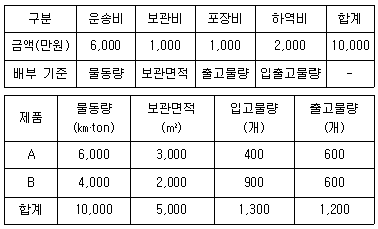
- 제품 A의 물류비는 5,000만원이다.
- 제품 B의 물류비는 4,500만원이다.
- 제품 A의 운송비로 6,000만원이 배부된다.
- 제품 B의 보관비로 600만원이 배부된다.
- 제품 A와 B의 하역비는 동일하게 배부된다.
(정답률: 40%)
21. 다음 설명에 해당하는 공급사슬관리(SCM) 기법의 명칭을 바르게 연결한 것은?
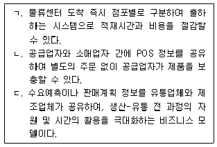
- ㄱ: QR, ㄴ: CRP, ㄷ: CPFR
- ㄱ: Cross-docking, ㄴ: BPR, ㄷ: CPFR
- ㄱ: Cross-docking, ㄴ: CRP, ㄷ: CPFR
- ㄱ: QR, ㄴ: ECR, ㄷ: VMI
- ㄱ: QR, ㄴ: Cross-docking, ㄷ: VMI
(정답률: 51%)
22. 채찍효과를 감소시키기 위한 대응방안으로 옳지 않은 것은?
- 수요정보를 집중화하고 공유한다.
- 제품공급의 리드타임(Lead time)을 단축시킨다.
- 상시저가전략 등의 가격안정화 정책을 도입한다.
- 최종소비자의 수요변동을 감소시키는 영업 전략을 선택한다.
- 일회 주문량을 증가시켜 운송비용을 절감한다.
(정답률: 63%)
23. 공급사슬관리(SCM)의 필요성에 관한 설명으로 옳은 것을 모두 고른 것은?
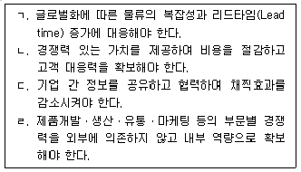
- ㄱ, ㄴ
- ㄱ, ㄷ
- ㄴ, ㄹ
- ㄱ, ㄴ, ㄷ
- ㄴ, ㄷ, ㄹ
(정답률: 60%)
24. 다음 기업사례에서 설명하는 공급사슬관리(SCM) 기법은?
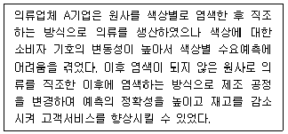
- Risk Pooling
- Exponential Smoothing
- Postponement
- Vendor Managed Inventory
- Sales and Operation Planning
(정답률: 52%)
25. 집중구매와 분산구매를 비교한 것으로 옳지 않은 것은?
- 집중구매는 수요량이 큰 품목에 적합하다.
- 집중구매는 자재의 긴급조달이 어렵다.
- 분산구매는 구입경비가 많이 든다.
- 분산구매는 구매량에 따라 가격할인이 가능한 품목에 적합하다.
- 분산구매는 구매절차가 간편하다.
(정답률: 62%)
26. 다음 설명에 해당하는 유통경로는?
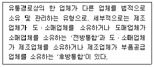
- 수직적 유통경로
- 매트릭스형 유통경로
- 네트워크형 유통경로
- 수평적 유통경로
- 전통적 유통경로
(정답률: 56%)
27. 도매기관에 관한 설명으로 옳지 않은 것은?
- 제조업자 도매기관은 제조업자가 직접 도매기능을 수행한다.
- 제조업자 도매기관은 제조업자가 입지 선정부터 점포 내의 판매원 관리까지 모든 업무를 직접 관리한다.
- 상인 도매기관은 상품을 직접 구매하여 판매한다.
- 대리 도매기관은 제조업자의 상품을 대신 판매ㆍ유통시켜준다.
- 대리 도매기관은 상품의 소유권을 가진다.
(정답률: 64%)
28. 물류정보의 종류에 관한 설명으로 옳지 않은 것은?
- 화물운송정보에는 화물보험정보, 컨테이너보험정보, 자동차운송보험정보 등이 포함된다.
- 수출화물검사정보에는 검량정보, 검수정보, 선적검량정보 등이 포함된다.
- 화물통관정보에는 수출입신고정보, 관세환급정보, 항공화물통관정보 등이 포함된다.
- 화주정보에는 화주성명, 전화번호, 화물의 종류 등이 포함된다.
- 항만정보에는 항만관리정보, 컨테이너추적정보, 항만작업정보 등이 포함된다.
(정답률: 46%)
29. 물류정보시스템에 관한 설명으로 옳지 않은 것은?
- 물류정보시스템은 운송, 보관, 하역, 포장 등의 전체 물류 기능을 효율적으로 관리할 수 있도록 해주는 정보시스템이다.
- 물류정보시스템의 정보는 발생원, 처리장소, 전달대상 등이 넓게 분산되어 있다.
- 물류정보시스템의 수ㆍ배송관리 기능은 고객의 주문에 대하여 적기배송체계의 확립과 최적운송계획을 수립한다.
- 물류정보시스템의 재고관리 기능은 최소의 비용으로 창고의 면적, 작업자, 하역설비 등의 경영자원을 배치한다.
- 물류정보시스템의 주문처리 기능은 주문의 진행 상황을 통합ㆍ관리한다.
(정답률: 36%)
30. 바코드에 관한 설명으로 옳은 것은?
- POS 시스템의 효과적인 이용을 위한 중요한 구성요소이다.
- 13자리 바코드의 처음 세 자리는 물류식별코드를 의미한다.
- 정보의 변경과 추가가 가능하다.
- 응용범위가 다양하고 신속한 데이터 수집이 가능하나, 도입비용이 많이 든다.
- 읽기와 쓰기가 가능하다.
(정답률: 57%)
31. RFID의 주파수대역별 특징에 관한 설명으로 옳지 않은 것은?
- 고주파수일수록 중장거리용으로 사용된다.
- 고주파수일수록 RFID 태그를 소형으로 만들 수 있다.
- 저주파수일수록 시스템 구축비용이 저렴하다.
- 저주파수일수록 장애물의 영향을 덜 받는다.
- 저주파수일수록 인식 속도가 빠르다.
(정답률: 38%)
32. POS 시스템으로부터 얻을 수 있는 정보를 모두 고른 것은?
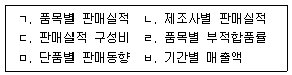
- ㄱ, ㄴ, ㅂ
- ㄱ, ㅁ, ㅂ
- ㄴ, ㄷ, ㄹ, ㅁ
- ㄱ, ㄴ, ㄷ, ㄹ, ㅁ
- ㄱ, ㄴ, ㄷ, ㅁ, ㅂ
(정답률: 56%)
33. 다음 설명에 해당하는 유통업종은?
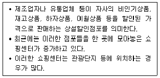
- 아웃렛스토어
- 하이퍼마켓
- 카테고리킬러
- 슈퍼센터
- 회원제 창고형 할인점
(정답률: 65%)
34. 물류표준화의 목적에 해당하지 않는 것은?
- 물류활동의 효율화
- 화물유통의 원활화
- 물류의 다품종ㆍ소량화
- 물류의 호환성과 연계성 확보
- 물류비의 절감
(정답률: 57%)
35. 물류표준화 내용 중 소프트웨어 표준화에 해당하는 것을 모두 고른 것은?
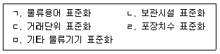
- ㄱ, ㄴ, ㄷ
- ㄱ, ㄷ, ㄹ
- ㄴ, ㄷ, ㅁ
- ㄴ, ㄹ, ㅁ
- ㄷ, ㄹ, ㅁ
(정답률: 59%)
36. 유닛로드시스템(Unit Load System)에 관한 설명으로 옳지 않은 것은?
- 모든 국가에서 사용하는 표준 파렛트의 종류와 규격은 동일하다.
- 포장단위치수, 파렛트, 하역장비, 보관설비 등의 표준화가 전제되어야 한다.
- 작업효율의 향상, 운반 활성화, 물류비용 감소 등을 기대할 수 있다.
- 하역을 기계화하고 운송, 보관 등을 일관화ㆍ합리화할 수 있다.
- 파렛트화 또는 컨테이너화에 의해 적재효율이 감소하고 추가비용이 발생할 수 있다.
(정답률: 45%)
37. 물류공동화의 목적으로 옳지 않은 것은?
- 대량 처리를 통한 물류비 절감
- 인력부족에 대한 대응
- 수ㆍ배송 효율의 향상
- 중복투자의 감소
- 참여 기업별로 차별화된 물류서비스 제공
(정답률: 64%)
38. 운송사업자 관점의 수ㆍ배송 공동화의 장점에 해당하는 것을 모두 고른 것은?
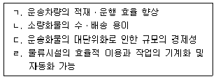
- ㄱ, ㄷ
- ㄴ, ㄷ
- ㄴ, ㄹ
- ㄱ, ㄷ, ㄹ
- ㄱ, ㄴ, ㄷ, ㄹ
(정답률: 34%)
39. 수동형 RFID의 특징으로 옳은 것은?
- 가격이 고가이며 다양한 센서와 결합이 가능하다.
- 전파의 수신만 가능하고 구조가 간단하다.
- 원거리 데이터 교환에 사용된다.
- 배터리를 통해 전력을 공급받는다.
- 태그의 수명이 최장 10년으로 제한된다.
(정답률: 49%)
40. 다음 설명에 해당하는 기술은?
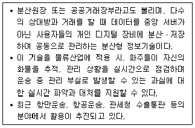
- 빅데이터
- 사물인터넷
- 인공지능
- 블록체인
- 클라우드 서비스
(정답률: 50%)
2과목: 화물수송론
41. 운송수단을 선택할 때의 고려사항으로 옳지 않은 것은?
- 화물의 종류 및 중량
- 운임부담력
- 화물 운송구간의 소요시간
- 로트 사이즈(Lot Size)
- 화물 납품처의 매출규모
(정답률: 59%)
42. 국내 화물운송에 관한 합리화 방안으로 옳지 않은 것은?
- 운송체계를 다변화하여 기존에 이용하고 있는 운송수단을 효율성이 높은 다른 운송수단으로 교체한다.
- 경쟁력 제고를 목적으로 자사의 비핵심 업무를 외부에 위탁하는 아웃소싱을 추진한다.
- 전체 운행거리에서 화물의 적재효율을 높이기 위하여 영차율을 최소화한다.
- 대량화물을 고속으로 운송하기 위하여 블록 트레인(Block Train)을 도입한다.
- 운송경로-물류거점-운송수단을 연계한 물류네트워크를 구축한다.
(정답률: 52%)
43. 화물운송에 관한 설명으로 옳지 않은 것은?
- 운송의 3대 요소는 운송연결점(Node), 운송경로(Link), 운송수단(Mode)이다.
- 물류활동의 목표인 비용절감과 고객서비스의 향상을 추구한다.
- 제품의 생산과 소비를 연결하는 파이프 역할을 수행한다.
- 배송은 물류거점 간 간선운송을 의미한다.
- 운송수단을 통해 한 장소에서 다른 장소로 화물을 이동시키는 물리적 행위이다.
(정답률: 61%)
44. 화물운송 서비스의 특징으로 옳지 않은 것은?
- 운송수단으로 화물을 이동하는 순간에 운송서비스가 창출되기 때문에 생산과 동시에 소비된다.
- 운임 비중이 클 경우에 운임상승은 운송수요를 감소시킨다.
- 운송수단 중에서 기술적으로 대체가능하다면 가장 저렴한 수단을 선택한다.
- 운송시기와 목적지에 따라 수요가 합해지고 이에 따라 운송서비스 공급이 가능하다.
- 운송수요는 많은 이질적인 개별수요로 구성되어 있기 때문에 계획적이고 체계적인 특성이 있다.
(정답률: 40%)
45. 운송효용 측면에서 ‘생산과 소비의 시간적 격차 조정’에 해당되는 것은?
- 지역 간 거리해소로 자원의 효율적 배분이 가능하다.
- 원격지 간의 생산과 판매를 촉진하여 유통의 범위와 기능을 확대시킨다.
- 지역 간 유통으로 상품가격의 조정 및 안정화를 도모한다.
- 유통활동의 간소화와 가격안정을 통하여 유통의 효율화를 촉진시킨다.
- 제품을 필요한 시점까지 보관하였다가 수요에 따라 공급하는 과정에서 운송효용이 달성된다.
(정답률: 52%)
46. 운송수단의 선택에 관한 설명으로 옳지 않은 것은?
- 화물수량이 적은 경우에는 해상운송보다 자동차 또는 항공운송을 선택한다.
- 자동차운송은 운송거리가 길수록 적합하고, 해상운송은 거리가 짧을수록 합리적이다.
- 운임부담능력이 있는 고가화물은 항공운송을 선택한다.
- 화물가치가 낮고 운임이 저렴하면 해상운송을 선택한다.
- 석유류, 가스제품의 경우에는 파이프라인 운송을 선택한다.
(정답률: 60%)
47. 운송 효율화 측면에서 ‘운송수단과 비용간의 관계’에 관한 설명으로 옳지 않은 것은?
- 운송수단의 선정 시 운송비용과 재고유지비용을 고려한다.
- 운송수단별 운송물량에 따라 운송비용에 차이가 있다.
- 항공운송은 리드타임(Lead Time)이 짧기 때문에 재고유지비용이 증가한다.
- 해상운송은 운송기간 중에 재고유지비용이 증가한다.
- 속도가 느린 운송수단일수록 운송 빈도가 낮아져 보관비가 증가한다.
(정답률: 59%)
48. 운송의 주요기능에 관한 설명으로 옳지 않은 것은?
- 판매와 생산을 조정하여 생산계획의 원활화를 도모한다.
- 약속된 장소와 기간 내에 화물을 고객에게 전달한다.
- 물류계획과 실행을 일치시킨다.
- 수주에서 출하까지의 작업효율화를 도모한다.
- 유통재고량을 최대로 유지시킨다.
(정답률: 57%)
49. 화물자동차의 중량 및 운송능력에 관한 설명으로 옳지 않은 것은?
- 공차중량은 화물을 적재하지 않고 연료, 냉각수, 윤활유 등을 채우지 않은 상태의 중량이다.
- 최대 적재중량은 화물을 최대로 적재할 수 있도록 허용된 중량이다.
- 자동차연결 총중량은 최대 적재중량에 트레일러와 트랙터의 무게까지 합산한 중량이다.
- 최대접지압력은 최대 적재상태에서 접지부에 미치는 단위면적당 중량이다.
- 화물자동차의 운송능력은 최대 적재중량에 자동차의 평균 속도를 곱하여 계산한다.
(정답률: 53%)
50. 특장차에 관한 설명으로 옳지 않은 것은?
- 특장차를 전용으로 이용할 경우에 화물의 포장비가 절감된다.
- 특장차는 신속한 상ㆍ하차가 가능하여 차량의 회전율을 향상시킨다.
- 특장차는 복화화물을 확보하는 것이 어렵기 때문에 편도 공차운행을 해야 하는 비효율성이 있다.
- 특장차는 운송화물의 특성에 맞춰 제작되기 때문에 차체의 무게가 가벼워진다.
- 특장차는 다른 종류의 화물을 수송하기에 부적합하며 화물 부족 시 운영효율이 떨어진다.
(정답률: 54%)
51. 운송회사는 공급지 A, B, C에서 수요지 W, X, Y, Z까지 화물을 운송하려고 한다. 최소비용법에 의한 총운송비용과 공급지 B에서 수요지 X까지의 운송량은? (단, 공급지와 수요지간 톤당 단위운송비용은 셀의 우측 상단에 표시됨)
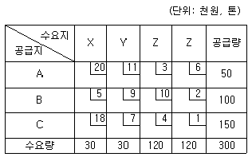
- 1,210,000원, 30톤
- 1,210,000원, 40톤
- 1,210,000원, 50톤
- 2,⑤0,000원, 30톤
- 2,⑤0,000원, 40톤
(정답률: 46%)
52. 운송회사는 공장에서 물류창고 E, G, I까지 각각 1대씩의 화물차량을 배정하려고 한다. 최단거리로 운송할 경우에 합산한 총운송거리는? (단, 링크의 숫자는 거리이며 단위는 km임)
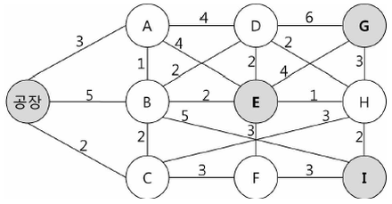
- 19 km
- 20 km
- 21 km
- 22 km
- 23 km
(정답률: 23%)
53. 트레일러 형상과 적재하기에 적합한 화물의 연결이 옳지 않은 것은?
- 평상식 트레일러 - 일반화물
- 저상식 트레일러 - 불도저
- 중저상식 트레일러 - 대형 핫코일(Hot Coil)
- 밴 트레일러 - 중량 블록화물
- 오픈탑 트레일러 - 고척화물
(정답률: 32%)
54. 화물자동차 운임 결정 시 고려사항으로 옳지 않은 것은?
- 운송거리는 연료비, 수리비, 타이어비 등 변동비에 영향을 주는 중요한 요소이다.
- 밀도가 높은 화물은 동일한 용적을 갖는 용기에 많이 적재하여 운송할 수 있다.
- 한 번에 운송되는 화물 단위가 클수록 대형차량을 이용하며 이 경우에 운송단위당 부담하는 고정비 및 일반관리비는 높아진다.
- 화물형상의 비정형성은 적재작업을 어렵게 하고 적재공간의 효율성을 떨어지게한다.
- 운송 중 발생되는 화물의 파손, 부패, 폭발가능성 등에 따라 운임이 달라진다.
(정답률: 54%)
55. 화물자동차에 관한 설명으로 옳은 것을 모두 고른 것은?
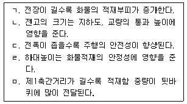
- ㄱ, ㄴ, ㄷ
- ㄱ, ㄴ, ㄹ
- ㄴ, ㄷ, ㄹ
- ㄴ, ㄹ, ㅁ
- ㄷ, ㄹ, ㅁ
(정답률: 54%)
56. 적재함의 크기가 폭 2.3미터, 길이 6.2미터인 윙바디 트럭이 있다. T-11형 파렛트를 1단으로 적재할 경우와 T-12형 파렛트를 1단으로 적재할 경우에 각각 적재 가능한 파렛트 수는?
- T-11형 10개, T-12형 10개
- T-11형 10개, T-12형 11개
- T-11형 10개, T-12형 12개
- T-11형 11개, T-12형 10개
- T-11형 11개, T-12형 11개
(정답률: 30%)
57. 화물차 안전운임제에 관한 설명으로 옳은 것은?
- 안전운임제는 과로ㆍ과적ㆍ과속에 내몰리는 화물운송 종사자의 근로 여건을 개선하고자 정부에서 직권으로 마련하였다.
- 안전운임제는 위반 시 과태료 처분이 내려지는 ‘안전운임’과 운임 산정에 참고할수 있는 ‘안전운송원가’ 두 가지 유형으로 구분된다.
- 안전운임은 컨테이너, 유류 품목에 한하여 3년 일몰제(2020년～2022년)로 우선적으로 도입된다.
- 안전운송원가는 철강재와 시멘트 품목에 우선적으로 도입된다.
- 화물자동차 안전운임위원회는 위원장을 포함하여 20명 이내로 구성하도록 화물자동차운수사업법에 명시되어 있다.
(정답률: 23%)
58. 공로운송의 운행제한에 관한 설명 중 ( )에 들어갈 숫자를 바르게 나열한 것은?
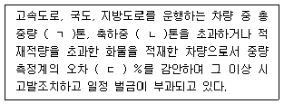
- ㄱ: 40, ㄴ: 10, ㄷ: 5
- ㄱ: 40, ㄴ: 10, ㄷ: 10
- ㄱ: 50, ㄴ: 12.5, ㄷ: 5
- ㄱ: 50, ㄴ: 12.5, ㄷ: 10
- ㄱ: 60, ㄴ: 15, ㄷ: 5
(정답률: 29%)
59. 다음과 같은 상황이 발생했을 때 택배표준약관(공정거래위원회 표준약관 제10026호)에 근거한 보상내용으로 옳은 것은?
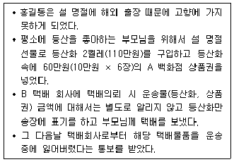
- 등산화 가격 110만원을 보상 받는다.
- 등산화 가격 110만원과 A 백화점 상품권 60만원을 모두 보상 받는다.
- 등산화 가격 110만원과 A 백화점 상품권 60만원의 각각 50%까지 보상 받는다.
- A 백화점 상품권 60만원 중 40만원까지 보상 받는다.
- 등산화 가격 110만원 중 50만원까지 보상 받는다.
(정답률: 48%)
60. 다음에서 설명하는 전용열차의 종류는?
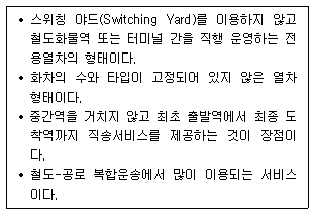
- 셔틀 트레인(Shuttle Train)
- 커플링앤세어링 트레인(Coupling & Sharing Train)
- 싱글웨곤 트레인(Single-Wagon Train)
- 블록 트레인(Block Train)
- 유닛 트레인(Unit Train)
(정답률: 47%)
61. 송유관 네트워크로 A 공급지에서 F 수요지까지 최대의 유량을 보내려고 한다. 최대유량은? (단, 링크의 화살표 방향으로만 송유가능하며 링크의 숫자는 용량을 나타냄)
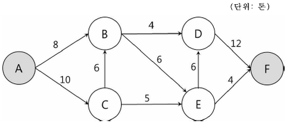
- 12톤
- 13톤
- 14톤
- 15톤
- 16톤
(정답률: 37%)
62. 다음에서 각각 설명하는 철도화물 운송용 차량은?
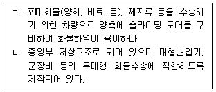
- ㄱ: 유개차, ㄴ: 곡형평판차
- ㄱ: 컨테이너차, ㄴ: 곡형평판차
- ㄱ: 곡형평판차, ㄴ: 유개차
- ㄱ: 곡형평판차, ㄴ: 컨테이너차
- ㄱ: 무개차, ㄴ: 곡형평판차
(정답률: 41%)
63. 택배사업자가 택배표준약관(공정거래위원회 표준약관 제10026호)에 근거하여 운송물의 수탁을 거절할 수 있는 경우가 아닌 것은?
- A 회사가 B 회사에게 보낸 재생 불가능한 계약서
- C 농업법인이 보낸 쌀 10 kg
- D 애견회사가 보낸 강아지 2마리
- E 보석상이 보낸 400만원 상당의 금목걸이
- F 총포상이 보낸 화약
(정답률: 58%)
64. 철도하역방식인 COFC(Container on Flat Car)에 관한 설명으로 옳지 않은 것은?
- 컨테이너를 적재한 트레일러를 철도화차에 상차하거나 철도화차로부터 하차하는 것이다.
- 컨테이너 자체만 철도화차에 상차하거나 하차하는 방식이다.
- 철도운송과 해상운송의 연계가 용이하다.
- 하역작업이 용이하고 화차중량이 가벼워 보편화된 철도하역방식이다.
- 철도화차에 컨테이너를 상ㆍ하차하기 위해서는 크레인 및 지게차 등의 하역장비가 필요하다.
(정답률: 54%)
65. 택배표준약관(공정거래위원회 표준약관 제10026호)에 따른 용어 설명을 바르게 나열한 것은?
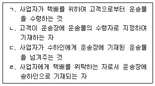
- ㄱ: 수탁, ㄴ: 수하인, ㄷ: 인도, ㄹ: 고객
- ㄱ: 수탁, ㄴ: 수탁인, ㄷ: 운송, ㄹ: 고객
- ㄱ: 수하, ㄴ: 수탁인, ㄷ: 인도, ㄹ: 운송 수령인
- ㄱ: 수하, ㄴ: 수탁인, ㄷ: 배달, ㄹ: 운송 수탁인
- ㄱ: 수하, ㄴ: 수하인, ㄷ: 운송, ㄹ: 운송 수령인
(정답률: 50%)
66. 택배서비스 형태의 설명을 바르게 나열한 것은?
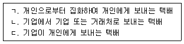
- ㄱ: B2C, ㄴ: C2C, ㄷ: C2B
- ㄱ: C2C, ㄴ: B2B, ㄷ: C2B
- ㄱ: B2B, ㄴ: C2C, ㄷ: B2C
- ㄱ: C2B, ㄴ: B2B, ㄷ: C2C
- ㄱ: C2C, ㄴ: B2B, ㄷ: B2C
(정답률: 56%)
67. 다음 설명에 해당하는 해상운송계약의 형태는?
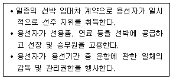
- Daily Charter
- Lump Sum Charter
- Bareboat Charter
- Trip Charter
- Partial Charter
(정답률: 46%)
68. 선박의 종류에 관한 설명으로 옳지 않은 것은?
- LASH선은 부선(Barge)에 화물을 적재한 채로 본선에 적재 및 운송하는 선박이다.
- 전용선(Specialized Vessel)은 특정화물의 적재 및 운송에 적합한 구조와 설비를 갖춘 선박이다.
- 로로선(RO-RO Vessel)은 경사판(Ramp)을 통하여 하역할 수 있는 선박이다.
- 유조선(Tanker)은 원유, 액화가스, 화공약품 등 액상 화물의 운송에 적합한 선박이다.
- 겸용선(Combination Carrier)은 부선(Barge)에 적재된 화물을 본선에 설치되어 있는 크레인으로 하역하는 선박이다.
(정답률: 50%)
69. 선하증권에 관한 국제규칙인 함부르크 규칙(Hamburg Rules, 1978)의 주요 내용으로 옳지 않은 것은?
- 선박의 감항능력(내항성) 담보에 관한 주의의무 규정의 삭제
- 화재면책의 폐지 및 운송인 책임한도액의 인상
- 항해과실 면책조항의 신설
- 면책 카탈로그(Catalogue)의 폐지
- 지연손해에 관한 운송인 책임의 명문화
(정답률: 27%)
70. 다음 설명에 해당하는 항공운임은?
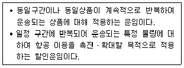
- General Cargo Rate
- Commodity Classification Rate
- Specific Commodity Rate
- Bulk Unitization Charge
- Disbursement Amount
(정답률: 40%)
71. 해상운임에 관한 설명으로 옳지 않은 것은?
- Discrimination Rate는 화물, 장소, 화주에 따라 차별적으로 부과하는 운임이다.
- Freight Collect는 무역조건이 CFR계약이나 CIF계약으로 체결되는 경우에 적용되는 운임이다.
- Optional Surcharge는 양륙항을 정하지 않은 상태에서 운송 도중에 양륙항이 정해지는 경우에 부과되는 할증운임이다.
- Terminal Handling Charge는 화물이 CY에 입고된 순간부터 본선의 선측까지와 본선의 선측에서 CY 게이트를 통과하기까지의 화물 이동에 따른 비용으로 국가별로 그 명칭과 징수내용이 다소 상이하다.
- Congestion Surcharge는 도착항의 항만이 혼잡할 경우에 부과되는 할증료이다.
(정답률: 31%)
72. 다음 설명에 해당하는 선박의 톤수는?
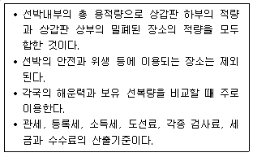
- 총톤수(Gross Tonnage)
- 순톤수(Net Tonnage)
- 중량톤수(Weight Tonnage)
- 배수톤수(Displacement Tonnage)
- 재화중량톤수(Dead Weight Tonnage)
(정답률: 49%)
73. 다음 설명에 해당하는 혼재서비스(Consolidation Service) 형태는?
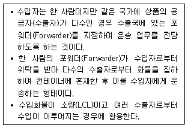
- Buyer’s Consolidation
- Shipper’s Consolidation
- Consigner’s Consolidation
- Co-Loading Service
- Seller’s Consolidation
(정답률: 44%)
74. 항공운송 관련 사업에 관한 설명으로 옳지 않은 것은?
- 국제항공운송사업은 타인의 수요에 맞추어 항공기를 사용하여 유상으로 여객이나 화물을 운송하는 사업이다.
- 항공운송총대리점업은 항공운송사업자를 위하여 유상으로 항공기를 이용한 여객이 나 화물의 국제운송계약 체결을 대리하는 사업이다.
- 항공운송사업자는 국내항공운송사업자, 국제항공운송사업자 및 소형항공운송사업자를 말한다.
- 국제물류주선업자(Freight Forwarder)는 항공기를 가지고 있지 않지만 독자적인 운송약관과 자체 운임요율표를 가지고 있으며 자체 운송장인 MAWB(Master Air Waybill)를 발행하는 자이다.
- 상업서류송달업은 타인의 수요에 맞추어 유상으로 수출입 등에 관한 서류와 그에 딸린 견본품을 항공기를 이용하여 송달하는 사업이다.
(정답률: 52%)
75. 산업단지 내에 있는 6개의 물류거점을 모두 연결하는 도로를 신설하려고 한다. 총도로연장을 최소화할 경우에 필요한 도로연장은? (단, 다음은 각 링크의 출발지 물류거점, 도착지 물류거점, 해당 링크연장을 나타내고 ‘0’은 해당 링크가 없음을 나타냄)
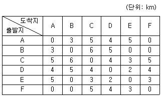
- 14 km
- 15 km
- 16 km
- 17 km
- 18 km
(정답률: 25%)
76. 3개의 공급지와 3개의 수요지를 지닌 수송문제를 보겔추정법을 적용하여 해결하려고 한다. 총운송비용과 공급지 B에서 수요지 Z까지의 운송량은? (단, 공급지와 수요지간 톤당 단위운송비용은 셀의 우측 상단에 표시됨)
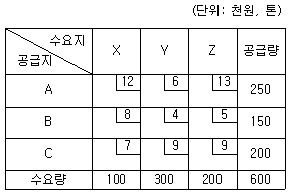
- 3,600,000원, 50톤
- 3,700,000원, 50톤
- 3,700,000원, 100톤
- 3,800,000원, 50톤
- 3,800,000원, 100톤
(정답률: 36%)
77. 다음 통행배정모형 중 용량비제약모형을 모두 고른 것은?
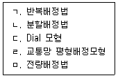
- ㄱ, ㄴ
- ㄱ, ㄹ
- ㄴ, ㄷ
- ㄷ, ㅁ
- ㄹ, ㅁ
(정답률: 25%)
78. 20개의 공항을 보유하고 있는 국가가 허브 앤드 스포크(Hub and Spoke) 네트워크를 구축하려고 한다. 20개의 공항 중 4개를 허브로 선택하여 운영할 경우에 총 몇 개의 왕복노선이 필요한가?
- 16개
- 18개
- 20개
- 22개
- 24개
(정답률: 25%)
79. 화물분포모형이 아닌 것은?
- 평균인자법
- 프래타법
- 중력모형
- 엔트로피 극대화모형
- 로짓모형
(정답률: 16%)
80. A 공장에서 B 물류창고까지 도로망을 이용하여 상품을 운송하려고 한다. 최소 비용수송계획법에 의한 A 공장에서 B 물류창고까지의 총운송비용 및 총운송량은? (단, 링크의 첫째 숫자는 도로용량, 둘째 숫자는 톤당 단위운송비용임)
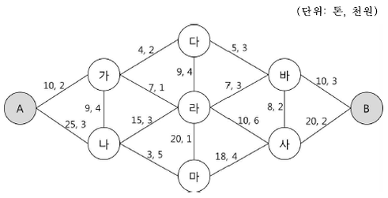
- 330,000원, 26톤
- 330,000원, 27톤
- 330,000원, 28톤
- 346,000원, 29톤
- 346,000원, 30톤
(정답률: 17%)
3과목: 국제물류론
81. 물류와 무역 간의 관계에 관한 설명으로 옳지 않은 것은?
- 무역 수요는 물류 수요를 창출한다.
- 무역계약 조건은 국제운송계약에 영향을 미친다.
- 물류비용 절감은 국제무역 확대발전으로 이어진다.
- 물류기술 발전은 무역거래 비용의 절감으로 이어진다.
- 무역규제 완화는 물류비용 증가로 이어진다.
(정답률: 57%)
82. 보호무역주의 확산이 글로벌생산업체에 미치는 영향으로 옳지 않은 것은?
- 현지국 내의 공급사슬관리 체제가 강화된다.
- 부품수입량이 감소하고 생산일정 관리가 어려워진다.
- 지역별로 전개하는 글로벌 분업체제가 강화된다.
- 연구개발 및 생산에서 규모의 경제가 약화된다.
- 표준화된 글로벌 제품의 대량생산체제가 어려워진다.
(정답률: 48%)
83. 국제물류의 기능에 관한 설명으로 옳지 않은 것은?
- 해외시장으로의 상품인도 시간을 단축시킨다.
- 수출업자의 물류비를 절감시킨다.
- 해외시장 고객에 대한 서비스 활동을 향상시킨다.
- 국제 경영활동에서 최대비용으로 사업효율성을 향상시킨다.
- 국제간 상품의 가격을 평준화시킨다.
(정답률: 52%)
84. 최근 국제운송의 발전 방향과 그 사례의 연결로 옳지 않은 것은?
- 초대형화: 일본의 TSL(Techno Super Line)
- 무인자동화: AGV Supervisor 시스템
- 빅데이터화: Samsung SDS의 Cello
- 스마트화: 함부르크항 smartPORT
- 친환경화: IMO MEPC MARPOL Annex VI
(정답률: 37%)
85. 정기용선계약에서 특정한 사유로 선박의 이용이 방해되는 기간동안 용선자의 용선료 지불의무를 중단하도록 하는 조항은?
- Off-hire
- Demurrage
- Employment and Indemnity
- Laytime
- Cancelling Date
(정답률: 37%)
86. 해상운송화물의 선적절차와 관련이 없는 서류는?
- Shipping Request
- Mate's Receipt
- Letter of Indemnity
- Shipping Order
- Letter of Guarantee
(정답률: 46%)
87. 해상운송화물의 운임체계에 관한 설명으로 옳지 않은 것은?
- 원칙적으로 운송인은 운임부과기준에 대한 재량권을 가진다.
- FAK는 화물의 종류에 관계없이 일률적으로 부과되는 운임이다.
- Dead Freight는 화물의 실제 적재량이 계약수량에 미달할 경우 그 부족분에 대해 지불하는 일종의 위약금이다.
- FIO조건은 선적과 양륙과정에서 선내 하역인부임을 화주가 부담하는 조건이다.
- Detention Charge는 CY에서 무료장치기간(free time)을 정해두고 그 기간 내에 컨테이너를 반출해가지 않을 경우 징수하는 부대비용이다.
(정답률: 29%)
88. 해상운송 용어에 관한 설명으로 옳은 것은?
- 흘수(Draft)는 선박의 수중에 잠기지 않는 수면 위의 선체 높이로 예비부력을 표시한다.
- 편의치적(FOC)은 자국선대의 해외이적을 방지하기 위해 자국의 자치령 또는 속령에 치적할 경우 선원고용의 융통성과 세제혜택을 허용하는 제도이다.
- 항만국 통제(Port State Control)는 자국 항만에 기항하는 외국국적 선박에 대해 국제협약이 정한 기준에 따라 선박의 안전기준 등을 점검하는 행위이다.
- 재화중량톤수(DWT)는 흘수선을 기준으로 화물이 적재된 상태의 선박과 화물의 중량을 나타내는 것이다.
- 운임톤(Revenue Ton)은 직접 상행위에 사용되는 용적으로 톤세, 항세, 항만시설사용료 등의 부과기준이 된다.
(정답률: 33%)
89. 해상운송에 관한 설명으로 옳지 않은 것은?
- 개품운송계약은 선하증권에 의해 증빙되는 부합계약의 성질을 지닌다.
- 용선계약의 내용은 상대적으로 협상력이 약한 용선자를 보호하기 위해 Hague-Visby Rules 같은 강행법규에 의해 규율된다.
- 정기선운송의 경우 부정기선운송에 비해 해운시황에 따른 배선축소나 운항항로에서의 철수 등이 신축적으로 이루어지기 어렵다.
- 부정기선운송의 운임은 해운시장에서 물동량과 선복량에 따라 변동하므로 정기선 운임에 비해 불안정하다.
- 정기용선계약에서 용선선박은 선박이 안전하게 항해할 수 있도록 일체의 속구를 갖추고 선원을 승선시킨 상태로 용선자에게 인도된다.
(정답률: 45%)
90. 로테르담 규칙의 내용에 관한 설명으로 옳지 않은 것은?
- 해공복합운송 및 해륙복합운송에 대해서도 적용된다.
- 해상화물운송장 및 전자선하증권이 발행되는 경우에도 적용된다.
- 인도 지연으로 인한 손해에 대해서는 규정하고 있지 않다.
- 운송인은 항해과실로 인해 발생한 손해에 대해서도 책임을 부담한다.
- 운송인의 감항능력주의 의무는 전체 해상운송기간에 대해서까지 확대된다.
(정답률: 49%)
91. 화인(Shipping Marks)에 관한 설명으로 옳지 않은 것은?
- 화인을 표시하지 않음으로써 발생하는 손해에 대해서는 해상보험에서 담보하지 않는다.
- 화인은 화물과의 대조를 위해 선하증권 및 상업송장에도 기재된다.
- Counter Mark는 화물의 등급이나 규격표시 등에 사용된다.
- Port Mark에는 선적항이나 중간 기항지가 표기된다.
- Case Number는 화물의 총 개수를 일련번호로 표기한 것이다.
(정답률: 22%)
92. 항해용선계약(Gencon C/P)상 정박기간과 체선료에 관한 조건이 아래와 같을 때 용선자가 선주에게 지불해야 하는 체선료는?
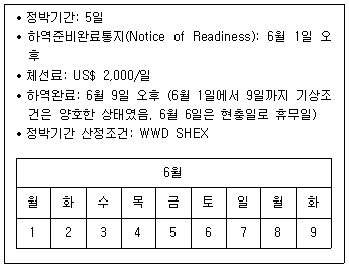
- 체선이 발생하지 않아 체선료를 지불하지 않아도 됨
- US$ 2,000
- US$ 4,000
- US$ 6,000
- US$ 8,000
(정답률: 28%)
93. 다음에서 설명하는 국제복합운송경로는?
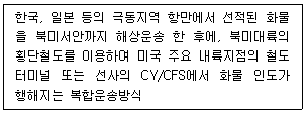
- IPI
- ALB
- SLB
- OCP
- RIPI
(정답률: 36%)
94. 항공운송에 관한 국제조약으로 옳은 것은?
- Hague Rules
- Hamburg Rules
- Rotterdam Rules
- Hague Protocol
- Hague-Visby Rules
(정답률: 49%)
95. 계약당사자가 아닌 운송인이 이행한 국제항공운송에 관한 일부규칙의 통일을 위한 와르소조약(Warsaw Convention)을 보충하는 과다라하라조약(Guadalajala Convention)을 채택한 국제기구는?
- FIATA
- IATA
- ICAO
- FAI
- ICC
(정답률: 36%)
96. 엔진이 장착된 차량으로서 적재완료된 단위탑재용기(ULD)를 올려놓은 상태에서 항공화물터미널에서 항공기까지 수평이동을 가능하게 하는 장비는?
- Pallet Scale
- Lift Loader
- Transporter
- Contour Gauge
- Cargo Cart
(정답률: 38%)
97. 국제항공운송에서 와르소조약(Warsaw Convention)의 화물에 대한 책임한 도액은?
- 150 francs per kilogram
- 250 francs per kilogram
- 350 francs per kilogram
- 450 francs per kilogram
- 550 francs per kilogram
(정답률: 35%)
98. 항공운송인이 스스로 보험을 수배할 능력이 없는 일반 화주를 대리하여 부보하는 보험종목은?
- Air Cargo Insurance
- Marine Cargo Insurance
- Freight Legal Liability Insurance
- Shipper's Interest Insurance
- Hull Insurance
(정답률: 23%)
99. 복합운송주선인의 업무 또는 기능으로 옳지 않은 것은?
- 화물의 혼재ㆍ분배
- 보험금 지급
- 보관업무 수행
- 운송의 자문ㆍ수배
- 운송관련 서류작성
(정답률: 59%)
100. 복합운송증권(MTD)에 관한 설명으로 옳지 않은 것은?
- 화물의 손상에 대하여 전체 운송구간에 대한 단일책임형태로 발행된다.
- 복합운송증권은 운송주선인이 발행할 수 없다.
- 본선 적재 전에 복합운송인이 화물을 수취한 상태에서 발행된다.
- 복합운송증권의 인도는 화물의 인도와 동일한 성격을 갖는다.
- 지시식으로 발행된 경우 배서ㆍ교부로 양도가 가능하다.
(정답률: 49%)
101. FCL 화물의 경우 송화인이 작성하며, CY에서 본선 적재할 때와 양륙지에서 컨테이너 보세운송할 때 사용되는 서류는?
- Dock Receipt
- Equipment Interchange Receipt
- Container Load Plan
- Cargo Delivery Order
- Letter of Indemnity
(정답률: 29%)
102. 신용장통일규칙(UCP 600) 제23조의 항공운송서류 수리요건에 관한 설명으로 옳지 않은 것은?
- 운송인의 명칭을 표시하고 운송인, 기장 또는 그들을 대리하는 지정대리인에 의하여 서명되어 있어야 한다.
- 물품이 운송을 위하여 수취되었음을 표시하고 있어야 한다.
- 신용장에 명기된 출발공항과 목적공항을 표시하고 있어야 한다.
- 신용장이 원본의 전통을 명시하고 있는 경우에도, 탁송인 또는 송화인용 원본으로 구성되어야 한다.
- 운송의 제조건을 포함하고 있거나 또는 운송의 제조건을 포함하는 다른 자료를 참조하고 있는 서류이어야 한다.
(정답률: 27%)
103. 선하증권에 관한 설명으로 옳지 않은 것은?
- Straight B/L은 송화주에게 발행된 유통성 선하증권을 송화주가 배서하여 운송인에게 반환함으로써, 선하증권의 유통성이 소멸된 B/L을 말한다.
- Clean B/L은 선박회사가 인수한 물품의 명세 또는 수량 및 포장에 하자가 없는 경우 발행되는 B/L이다.
- Long Form B/L은 선하증권의 필요기재사항과 운송약관이 모두 기재되어 발행되는 B/L을 말한다.
- Custody B/L은 화물이 운송인에게 인도되었으나 당해 화물을 선적할 선박이 입항하지 않은 상태에서 발행되는 B/L을 말한다.
- Stale B/L은 선하증권의 제시 시기가 선적일 후 21일이 경과하는 등 필요 이상으로 지연되었을 때 그렇게 지연된 B/L을 말한다.
(정답률: 32%)
104. 컨테이너 뒷문에 표기된 “TARE 2,350 KG”에서 2,350 KG이 의미하는 것은?
- 컨테이너 자체 중량
- 컨테이너에 실을 수 있는 최대 화물 중량
- 컨테이너 자체 중량과 컨테이너 섀시(chassis) 포함 총 중량
- 컨테이너 자체 중량과 컨테이너에 실을 수 있는 최대화물 중량의 합계
- 컨테이너 자체 중량, 컨테이너에 실을 수 있는 최대 화물 중량, 그리고 컨테이너 섀시(chassis) 중량을 모두 포함한 총 중량
(정답률: 29%)
1⑤. 항공화물운송장(AWB)과 선하증권(B/L)에 관한 설명으로 옳지 않은 것은?
- AWB는 유가증권이 아니고 화물수령증 역할을 한다.
- B/L은 일반적으로 지시식으로 발행되며 유통성을 갖는다.
- AWB는 화주이익보험을 가입한 경우 보험금액 등이 기재되어 보험가입증명서 내지 보험계약증서 역할을 한다.
- B/L은 일반적으로 본선 선적 후 발행하는 선적식으로 발행된다.
- AWB는 항공사가 작성하고 상환증권의 성격을 갖는다.
(정답률: 44%)
106. 항만의 시설에 관한 설명으로 옳은 것은?
- 항로(Access Channel)는 바람과 파랑의 방향에 대해 0°∼20°의 각도를 갖는 것이 좋다.
- 안벽은 해안 및 하안에 평행하게 축조된 석조제로서 선박 접안을 위하여 수직으로 만들어진 옹벽이다.
- 잔교는 선박의 접안과 화물의 하역을 위해 목재 및 철재 등의 기둥을 육상에 박아 윗부분을 콘크리트로 굳힌 선박의 계류시설이다.
- 박지(Anchorage)는 잔잔하고 충분한 수역과 닻을 내리기 좋은 지반이어야 하며 사용목적에 따른 차이는 없다.
- 선회장(Turning Basin)은 예선이 필요한 경우 대상선박 길이 3배를 직경으로 하는 원으로 한다.
(정답률: 44%)
107. 국제물류에서 항만의 기능에 관한 설명으로 옳지 않은 것은?
- 수출입 화물의 일시적 보관, 하역을 통하여 해륙을 연결한다.
- 물류활동의 중심지로서 다양한 부가가치 서비스를 제공한다.
- 국가 및 지역의 경제성장과 고용창출에 기여한다.
- 선사간 전략적 제휴 또는 합병을 유도한다.
- 신속한 하역과 내륙연결점에서 원활한 물류서비스를 제공한다.
(정답률: 49%)
108. ICD의 이용에 따른 이점으로 옳지 않은 것은?
- 집화ㆍ분류ㆍ혼재활동에 의한 물류합리화 실현
- 대량수송수단을 통한 수송비 절감
- 항만구역 및 항만주변의 도로체증 완화
- 철도수송에 의한 CO2ㆍ탄소배출 저감
- 항공운송수단의 효율적 연계를 통한 배송고속화
(정답률: 41%)
109. 해상화물 운송선박 및 항만시설에 대한 해상 테러 가능성을 대비하기 위하여 체약국과 선사 및 선박이 준수해야 하는 보안 사항 등을 규정하고 있는 것은?
- C-TPAT
- ISPS Code
- CSI
- Trade Act of 2002 Final Rule
- 24-hours rule
(정답률: 17%)
110. Institute Cargo Clause(A)(2009) 제4조 일반면책조항에 해당하지 않는 것은?
- 보험목적의 통상적인 누손, 통상적인 중량손 또는 용적손 또는 자연소모
- 보험목적의 고유의 하자 또는 성질로 인하여 발생한 멸실, 손상 또는 비용
- 피보험자의 고의의 불법행위에 기인하는 멸실, 손상 또는 비용
- 피보험자가 본선의 소유자, 관리자, 용선자 또는 운항자의 파산 또는 재정상의 궁핍한 사정을 알지 못한 상태에서 부보하고 이 계약기간 중에 발생한 멸실, 손상 또는 비용
- 원자력 또는 핵의 분열 및/또는 융합 또는 기타 이와 유사한 반응 또는 방사능이나 방사성물질을 응용한 무기 또는 장치의 사용으로 인하여 직접 또는 간접적으로 발생한 멸실, 손상 또는 비용
(정답률: 24%)
111. 신용장통일규칙(UCP 600)의 내용에 관한 설명으로 옳은 것은?
- 발행된 신용장에 취소불능(irrevocable) 이라고 표시하지 않으면 취소가능 신용장이다.
- 선적 기간을 정하기 위하여 사용하는 "to", "from", "after"란 용어는 언급된 당해일자를 포함한다.
- 신용장은 이용 가능한 해당 은행과 모든 은행을 이용할 수 있는지 여부를 명시하지 않아도 된다.
- 신용장은 발행의뢰인을 지급인으로 하는 환어음에 의하여 이용할 수 있도록 발행되어야 한다.
- 지정은행, 필요한 경우의 확인은행 및 발행은행은 서류가 문면상 일치하는 제시를 나타내는지를 결정하기 위해서는 서류만으로 심사하여야 한다.
(정답률: 33%)
112. 다음에서 설명하는 무역클레임의 성질에 따른 분류로 옳은 것은?
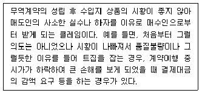
- 일반적 클레임
- 마켓 클레임
- 계획적 클레임
- 운송 클레임
- 보험 클레임
(정답률: 44%)
113. 보세구역의 종류에 관한 설명으로 옳지 않은 것은?
- 세관검사장은 통관을 하고자 하는 물품을 검사하기 위한 장소로서 세관장이 지정하는 지역을 말한다.
- 보세건설장은 산업시설의 건설에 소요되는 외국물품인 기계류 설비품 또는 공사용 장비를 장치ㆍ사용하여 해당 건설공사를 할 수 있다.
- 보세공장은 외국물품을 원료 또는 재료로 하거나 외국물품과 내국물품을 원료 또는 재료로 하여 제조ㆍ가공 기타 이와 유사한 작업을 할 수 있다.
- 보세전시장에서는 박람회ㆍ전람회ㆍ견본품 전시회 등의 운영을 위하여 외국물품을 장치ㆍ전시 또는 사용할 수 있다.
- 보세창고는 통관을 하고자 하는 물품을 일시 장치 하기 위한 장소로서 세관장이 지정하는 구역을 말한다.
(정답률: 27%)
114. IncotermsⓇ 2010 규칙의 주요 개정 특징과 용어의 설명으로 옳지 않은 것은?
- IncotermsⓇ 2010 규칙은 Incoterms 2000 규칙에 비해 규칙의 수가 13개에서 11개로 감소되었다.
- 단일 또는 복수의 운송방식에 사용가능한 규칙은 EXW, FCA, CPT, CIP, DAT, DAP, DDP 조건이다.
- IncotermsⓇ 2010 규칙은 국제매매계약 및 국내매매계약에 모두 사용 가능하다.
- 전자적 기록 또는 절차(Electronic record or procedure)는 하나 또는 그 이상의 전자메시지로 구성되고 경우에 따라서는 종이서류에 상응하는 기능을 하는 일련의 정보를 말한다.
- 포장(Packaging)은 물품이 운송에 적합하도록 포장하는 것과 포장된 물품을 컨테이너에 적입하는 것을 의미하고 있으며, IncotermsⓇ 2010 규칙에서는 포장된 물품을 컨테이너에 적입하는 것을 당사자의 의무로 새롭게 규정하고 있다.
(정답률: 30%)
115. IncotermsⓇ 2010 규칙에서 매도인의 비용과 위험부담이 가장 적은 거래조건으로부터 많은 거래조건 순으로 나열된 것은?(관련 규정 개정전 문제로 여기서는 기존 정답인 4번을 누르면 정답 처리됩니다. 자세한 내용은 해설을 참고하세요.)
- FAS - FOB - CIF - CFR
- FAS - CFR - FOB - CIF
- FOB - FAS - CFR - CIF
- FAS - FOB - CFR - CIF
- FOB - FAS - CIF - CFR
(정답률: 48%)
116. IncotermsⓇ 2010 규칙의 내용에서 ( ㄱ ), ( ㄴ )에 각각 들어갈 용어는?
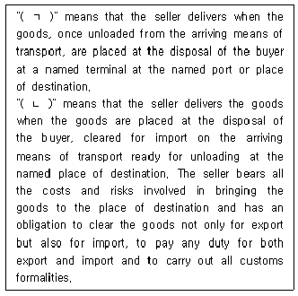
- ㄱ: DAP, ㄴ: DDP
- ㄱ: DAT, ㄴ: DDP
- ㄱ: DAP, ㄴ: DAT
- ㄱ: DAT, ㄴ: DAP
- ㄱ: DDP, ㄴ: DAT
(정답률: 25%)
117. 해상보험의 내용에 관한 설명으로 옳은 것은?
- 보험가액은 실제 보험계약자가 보험에 가입한 금액으로서 손해가 발생할 경우 보험자가 피보험자에게 지급하기로 약정한 최고금액이다.
- 피보험이익은 보험계약 체결 시 반드시 확정되어 있어야 한다.
- 동일한 해상사업과 이익 또는 그 일부에 관하여 둘 이상의 보험계약이 피보험자에 의해서 또는 피보험자를 대리하여 체결되고 보험금액이 MIA에서 허용된 손해보상액을 초과하는 경우 공동보험에 해당한다.
- 청과나 육류 등이 부패하여 식용으로 사용할 수 없게 된 경우에 보험목적의 파괴에 해당하여 현실전손으로 볼 수 있다.
- 기평가보험증권은 보험목적의 가액을 기재하지 않고 보험금액의 한도에 따라서 보험가액이 추후 확정되도록 하는 보험증권이다.
(정답률: 23%)
118. 구상무역에 사용할 수 있는 신용장으로 옳은 것을 모두 고른 것은?
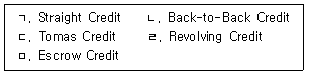
- ㄱ, ㄴ, ㅁ
- ㄱ, ㄷ, ㄹ
- ㄴ, ㄷ, ㄹ
- ㄴ, ㄷ, ㅁ
- ㄷ, ㄹ, ㅁ
(정답률: 24%)
119. 신용장으로 대금결제가 이루어지는 무역계약에서 선적조건에 관한 설명으로 옳지 않은 것은?
- ‘Shipment shall be made on or about May 10, 2019.’는 2019년 5월 4일에서 5월 15일까지의 기간에 선적을 완료해야 한다.
- ‘Shipment : Until May 10, 2019.’는 선적을 2019년 5월 10일까지 완료해야 한다.
- ‘Shipment : Before May 10, 2019.’는 선적을 2019년 5월 9일까지 완료해야 한다.
- 선적시기와 관련하여 immediately, promptly, as soon as possible이라는 표현의 용어는 무시하도록 하고 있다.
- ‘Partial shipments are prohibited.’는 분할선적이 허용되지 않음을 의미한다.
(정답률: 46%)
120. 무역계약의 주요 조건에 관한 설명으로 옳은 것은?
- 표준품매매(Sales by Standard)는 주로 전기, 전자제품 등의 거래에 사용되는 것으로, 상품의 규격이나 품질 수준을 국제기구 등이 부여한 등급으로 결정하는 방식이다.
- M/L(More or Less) clause는 Bulk 화물의 경우 계약 물품의 수량 앞에 about 등을 표기하여 인도수량의 신축성을 부여하기 위한 수량표현 방식이다.
- COD(Cash on Delivery)는 양륙지에서 계약물품을 매수인에게 전달하면서 현금으로 결제받는 방식이다.
- D/A(Documents Against Acceptance)는 관련 서류가 첨부된 일람불 환어음을 통해 결제하는 방식이다.
- M/T(Mail Transfer)는 지급은행에 대하여 일정한 금액을 지급하여 줄 것을 위탁하는 우편환을 수입상이 거래은행으로부터 발급받아 직접 수출상에게 제시하여 결제하는 방식이다.
(정답률: 31%)